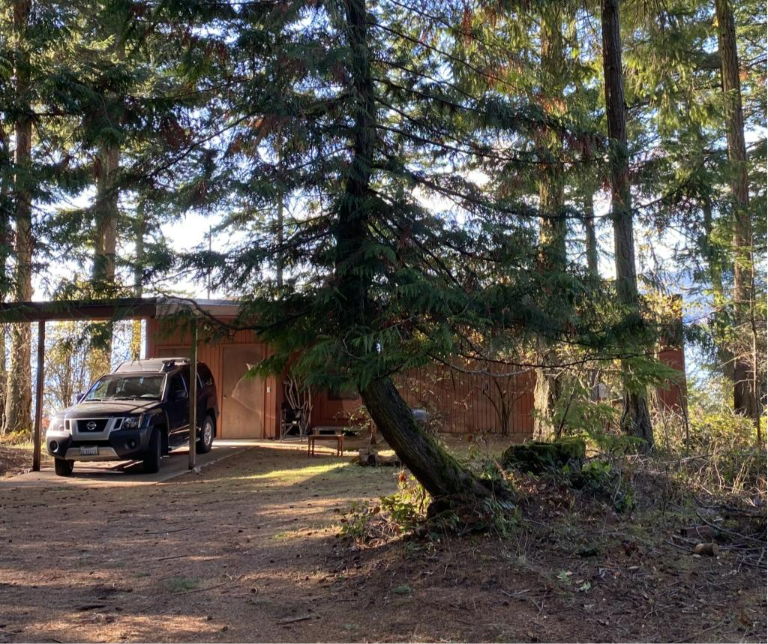
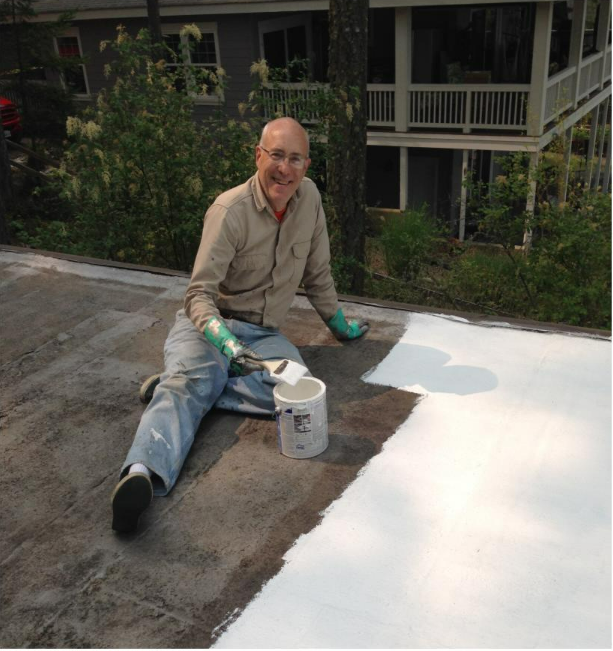
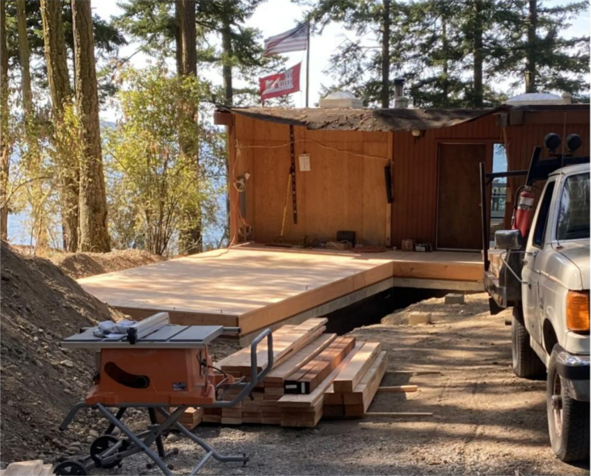
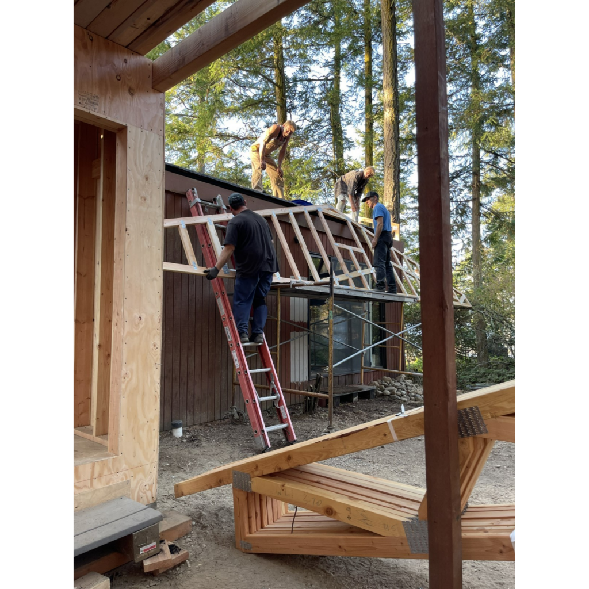
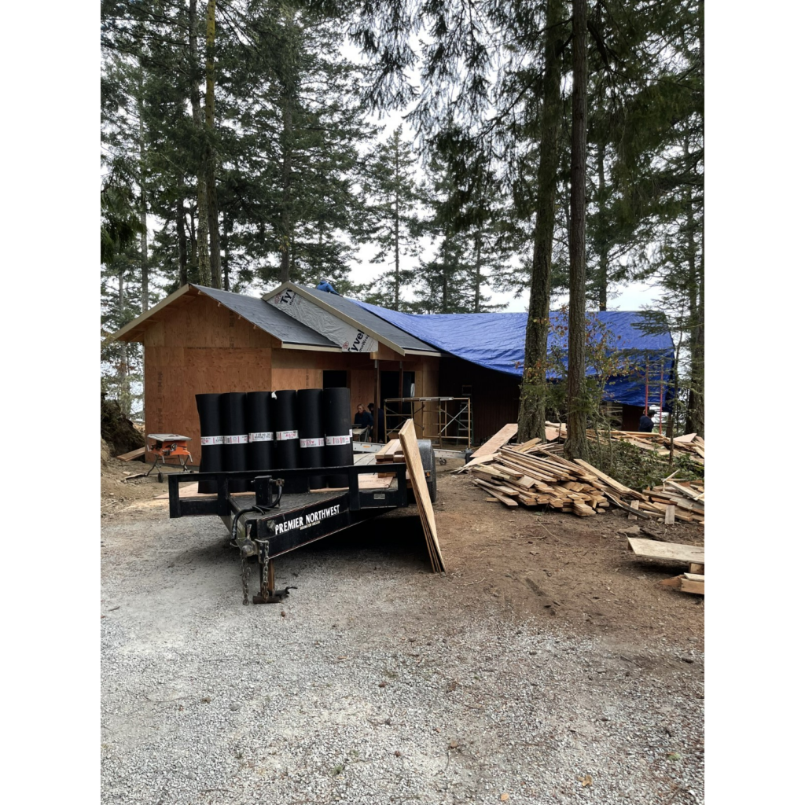
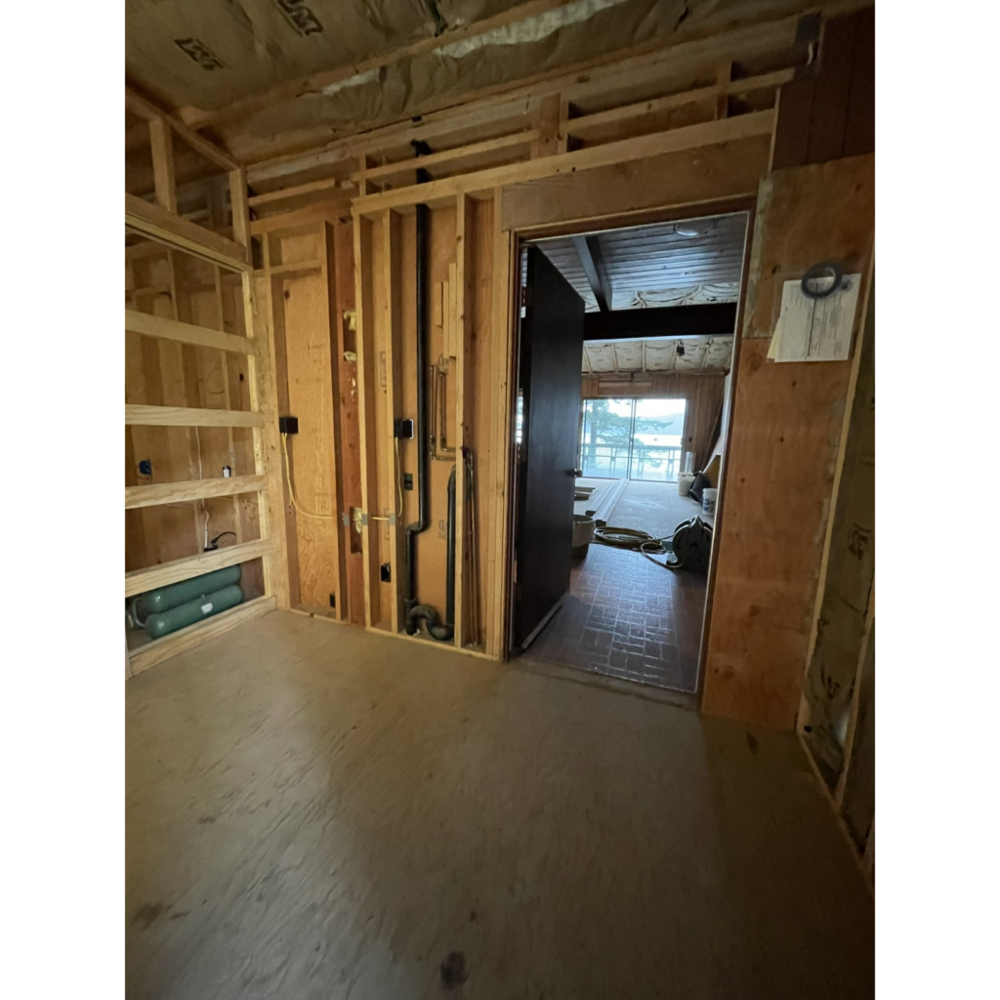
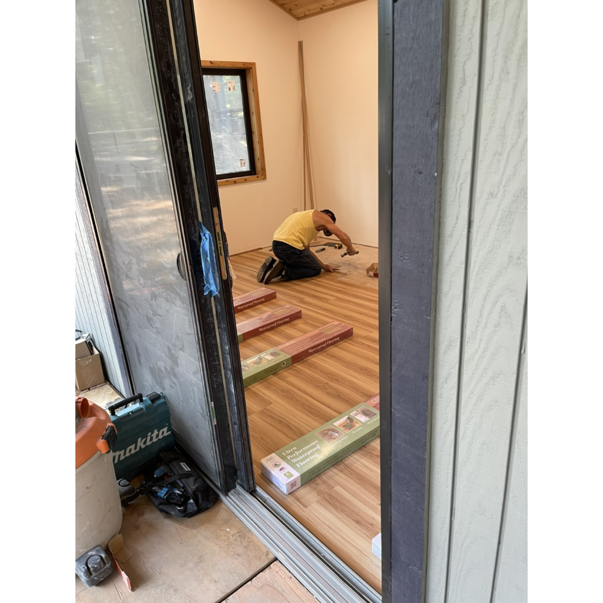
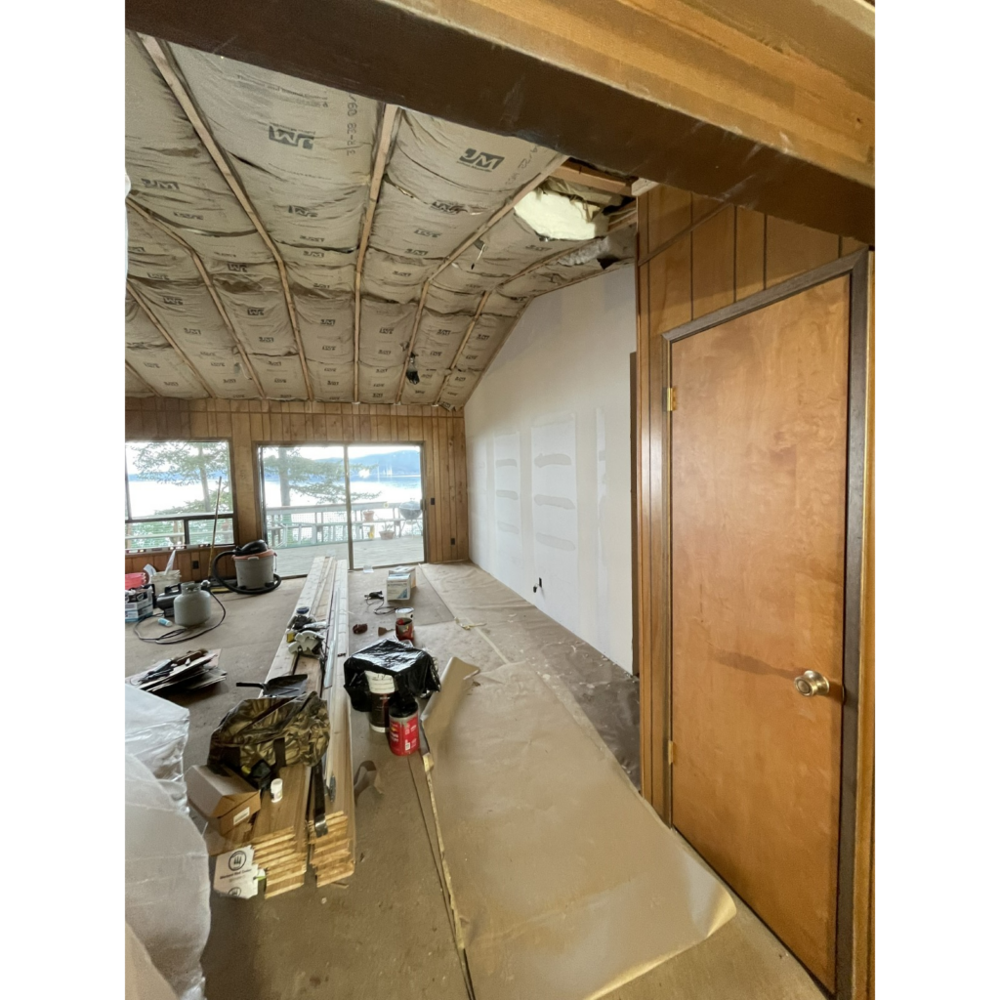

By Elizabeth Dunlop Richter
“Chateau Nouveau,” the affectionate name my husband Tobin has given to our renovated Blakely Island cabin, is virtually finished, following a five year process and two years of construction documented in two previous posts. We’ve had a beautiful summer with bald eagles, deer, and beach combing with visits from family thanks to the expanded space. Except we almost didn’t! Guests were coming July 27, months after we expected construction to be long over. It wasn’t.
As attentive readers may recall, we had inherited a charming two-bedroom waterfront retirement home my mother had built in 1974 on a small island in Washington state’s San Juan Islands. Its charm, however, was marred by its flat roof, her preferred contemporary design, that had leaked for years, sending Tobin up to patch and paint for many, many summers. We knew a peaked roof was in the future and finally decided it was time to do something about it and, at the same time, add more living space. We would add a family room doubling as an extra guest room, a laundry room, and a foyer connecting it all under the new peaked roof. The plan maximized the expansion to the limit permitted by San Juan County shoreline restrictions.


The challenges of building on a small island cannot be overestimated, many of which I recounted in the previous articles. I had promised an update and final report in a month or two. It’s now a year later. What can I say! One of the “joys” of building on a small island is that contractors and workmen, when you can get one, virtually always work on a “time and materials” basis…no bids, just optimistic estimates. Such estimates do not consider labor shortages, supply chain issues, design changes, the weather, construction errors, and of course competing projects. I should also remind you that there is no ferry or causeway to Blakely. Everything has to come over on a small water taxi or a barge.
Our contractor, who lives part-time on Blakely, has many clients here. He and his team would often be called by former or current clients to handle emergencies like power outages, leaks, and whatever he felt was important to keep the relationship intact. Understandable but these meant time away from our project. Did I mention the final challenge? Escalating bills. If you’re interested in experiencing the underbrush of remodeling, read on. Otherwise, just enjoy the forest and the trees!

When I last reported, the under-flooring of the new addition was completed. I had returned home in September for obligations in Chicago, leaving Tobin to monitor the work; he would make several trips over the next few months The immediate goal was to have the new roof’s waterproof layer in place before the first fall rains in early October. This was critical because just the wooden ceiling under the old roof would remain over the primary bedroom suite and the guest bedroom and bathroom; the living room, dining area and kitchen would be totally exposed for several weeks.
Soon after I left, the framing of the addition was underway. An initial challenge was that a few elements of the plans had to be reconciled on the job. Other issues quickly emerged. The final design called for a high “transom” window so that we would not look directly at the neighboring property. The carpenter said he could not build it as drawn because of stud placement. The carpenter suggested a different shape in a different location, one of many “tweaks” to come.
With the framing done, it was now time to remove the old roof and get the trusses in place, with the option to cover the building with tarps on stand-by if necessary. The countdown to rainy weather due in early October began. The contractor found “layers of water” in the old sagging roof; this was a just-in-time renovation! The carefully watched weather forecast said no rain until Oct. 13.
The new peaked roof design required 36 trusses. Putting them in place proved to be unusually challenging, first because one had split in moving and secondly because there were at least six different truss configurations with a complicated numbering system. The split truss was put in place with a plan to fix it later. As Tobin and the team worked to place all the trusses, there was one for which no place could be found. As they progressed, their aggravation grew. There was a truss with no place to install it! Horrors, were all the trusses in the wrong place? This was the last problem anyone expected. Tobin finally called the truss engineer. Apparently he had emailed months earlier that he had made an extra truss by mistake and was sending it along anyway. Miracle of miracles, they discovered that the extra truss was a duplicate of the one that had split! Problem solved.
 |
Tobin, reflecting later on the process, “I remember standing in the living room and looking at the sky and wondering if there would ever be a roof over it!”
The October 5th weather report now said there was an increasing likelihood of rain on Monday, October 10, requiring the house to be covered with tarps in case of rain. Miraculously again, it did not rain on October 10, or October 13. The work on the roof continued. Could the waterproofing be completed before the rain now predicted for October 21 st? Need you ask? The first light rain came October 20. Rain all day October 21. Although the felt layer was still not completed, tarps did keep the rain out of the interior.

There was plenty of interior work to do while waiting for some dry days to finish the felt layer and attach the metal roof. A project completion date of January 1 was optimistically set. It turned out that the roof color we chose was not available in the type of roof to be used, so a dark brown was chosen that would work. Truss bracing continued. We learned the heating contractor had gone hunting for two weeks. Another delay!

We monitored the work remotely from Chicago. Insulation, cedar tongue and groove ceilings and more remained to be completed. Three paneled walls in the living room, hall, and guest room were ripped out; insulation installed; and reverberation strips added under the drywall for soundproofing. Insulation was installed in the addition. Access points for the two new attics were determined, designed, and installed. Yes, more storage! It was, however, now January 24, three weeks past the estimated completion date. Tobin was on Blakely for the week of January 19-26. The contractor then assured him that all would wrap by May 1.
By March 10, the to-do list still included drywall, ceiling installation, the ridge cap on the metal roof (now in place), skylight installation, and new kitchen cabinets and countertop. Meanwhile, the exterior was painted a soft grey with midnight blue trim. There was nothing on the outside my mother would have recognized.
There were no more miracles to get the work done as we hoped by May 1. We were down two workmen – one fired, one quit. July 27 began to feel very close. The check list included: sanding and painting interior drywall, installing the family room and foyer/kitchen floors, installing the ceiling in the family room and the floor in the laundry room, finding a fireplace chimney extension for the raised living room ceiling, and installing new cabinets in the kitchen. May 8, we learned that our contractor’s in-laws were in a serious accident, and he’d be going to Oklahoma May 10-16. We were down to one workman.

June 14, the washing machine and dryer were delivered. June 18, the new hot water heater was delivered. Our contractor was back, and he and his assistant installed them. The addition’s Murphy bed needed assembly and was missing bed lights. It would take over three days to get it put together. Our absolute deadline remained July 27 when our family would arrive for two weeks. It would be very tight.

Leaks in the laundry room, a gutter miscount, and cleaning grout off the newly laid kitchen floor ate up more time. The final major project, once the stored furniture had been moved out of the guest room, was to open its walls and check for mold, suspected because of a leak in the old roof. Not only mold, but a mouse nest greeted the team. The walls were remediated and panels reinstalled.
Our contractor completed major grading of the area around the house; a gravel driveway and paths to the storage shed and front deck were laid out. Further landscaping will wait until next year. I arrived July 17 in time for two weeks of unpacking boxes and setting up rooms before the family arrived. Our pair of workmen were still on site dealing with details pointed out by the building inspector.
We cleaned cabinets and drawers, noticing where the mice had wandered. Books, toys, and sporting equipment were unpacked and organized. We were ready! The renovation was done…almost. Luckily our contractor was available for our own emergencies! As the family arrived, we discovered we needed a new stove (the 45 year–old harvest gold classic finally gave out) and within a week, we needed a new toilet as well. Our contractor was able to find both at the local Home Depot. At last we could relax with family. With the basic changes completed, we naturally have a list for next year, but we can enjoy Chateau Nouveau and the real reason we took on the island challenges: the island itself!